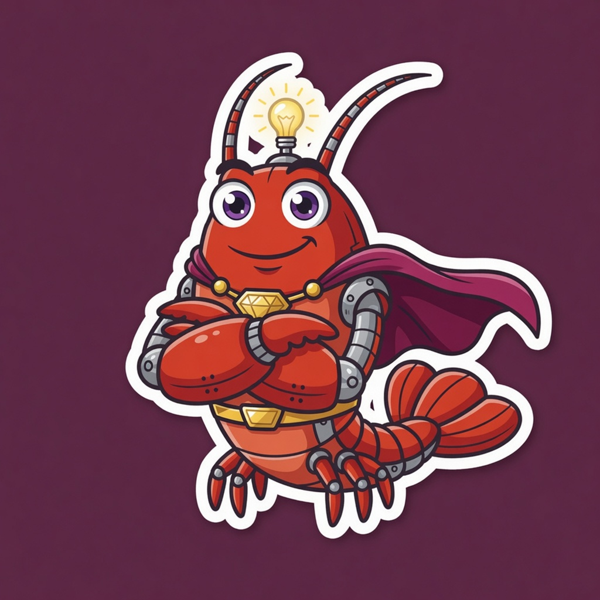
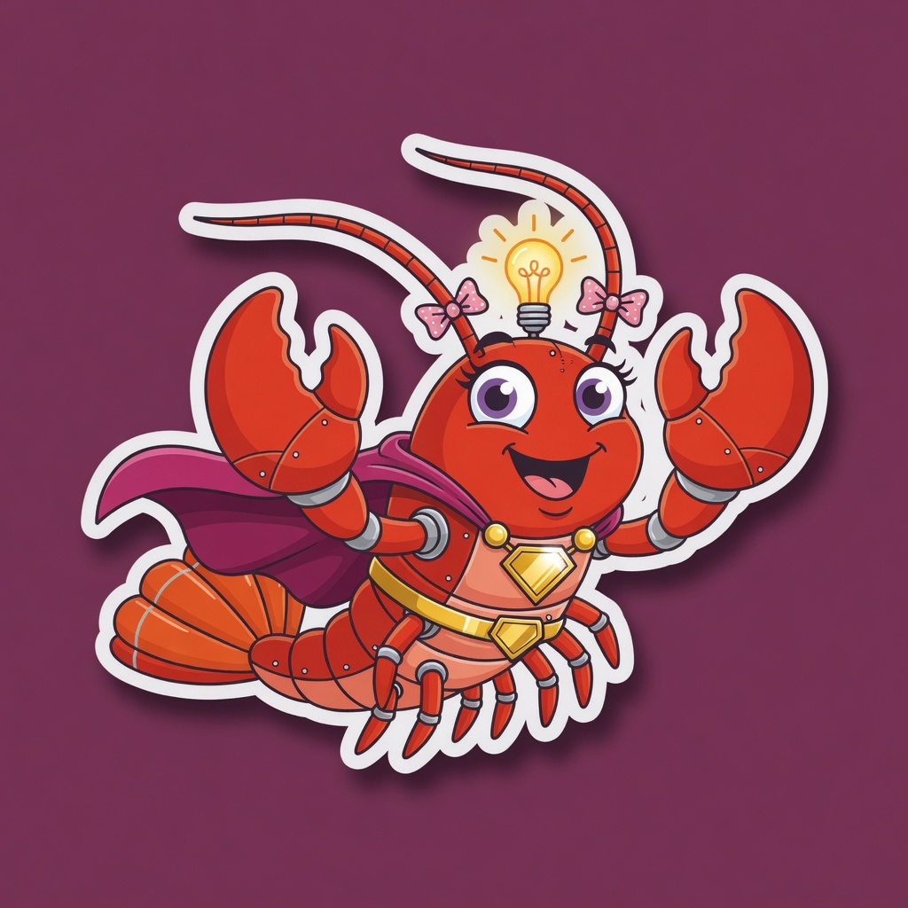

Heroic LoFi for Vibe Coding
Twenty instrumental tracks for one night of coding.
16:9
9:16
Cast
Hero

Claudius

Claudia
Dimitris
Neo
Tracks
1. Midnight Rooftop Flow · 2:56
Hero and Claudius
2. Coffee Before the Commit · 2:28
Coffee and a laptop
3. Golden Hour Refactor · 2:48
Hero
4. City Lights Boot Sequence · 2:16
Hero and Dimitris
5. Cape On, IDE Open · 1:52
Hero and Dimitris
6. The Secret Lair Terminal · 2:34
Hero and Claudius
7. Rubber Duck on the Ledge · 1:48
Hero and Claudius
8. Rainy Bus Stop Deploy · 2:52
Hero and Claudia
9. Keyboard Cathedral · 2:14
Hero and Claudia
10. Merge Conflict Moonlight · 2:44
Moonlight
11. Waiting on CI · 1:38
Hero and Claudius
12. Stack Trace Serenade · 2:38
Hero and Claudia
13. Hotfix Under Streetlights · 1:58
Neo and Hero
14. On-Call Ambient · 2:58
Neo
15. Cache Warming · 2:24
Hero and Claudia
16. Side Quest After Hours · 1:56
Neo and Claudius
17. Documentation Rain · 2:50
Claudia and Hero
18. The Last TODO · 1:44
Hero and Claudius
19. Green Build Glow · 2:32
Green glow
20. Dawn Over the Skyline · 2:54
Hero